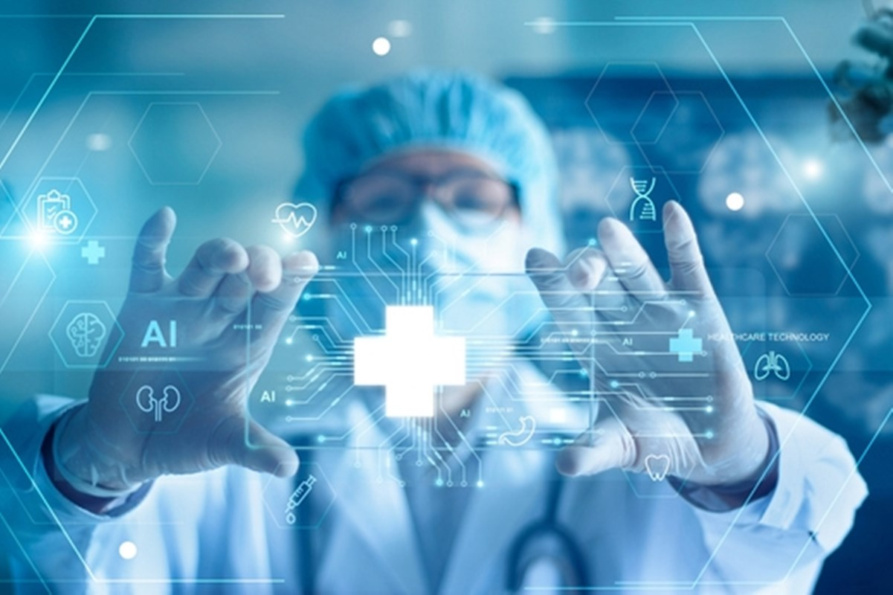
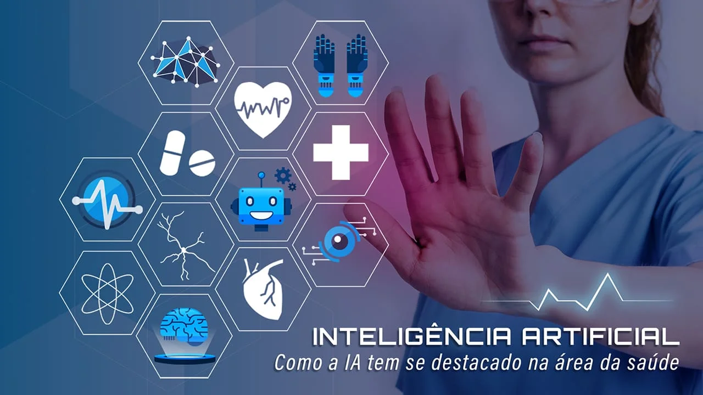
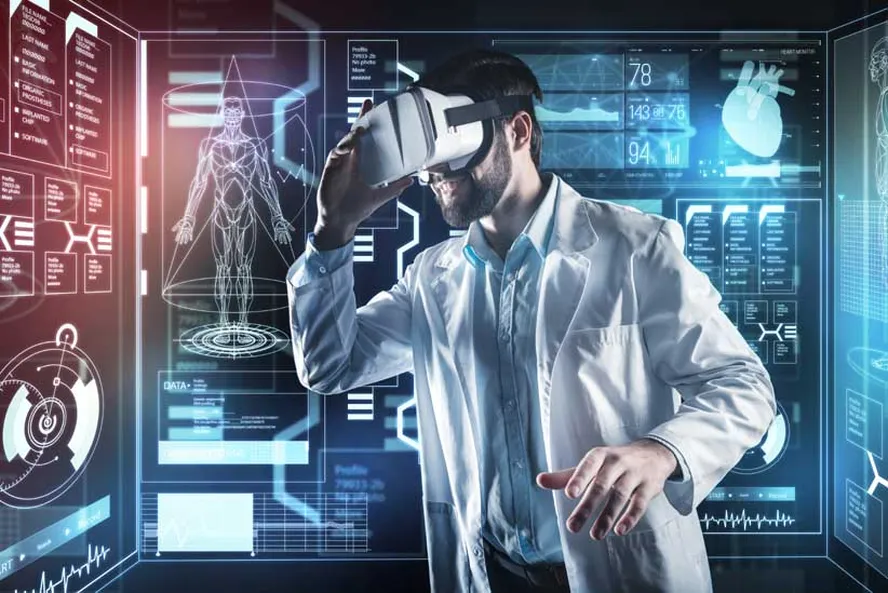

O Futuro da Medicina na Era da IA
A inteligência artificial (IA) está revolucionando a medicina, atuando como uma poderosa ferramenta para médicos e pesquisadores.



Veja como profissões estão mudando com a inteligência artificial!
A inteligência artificial (IA) está revolucionando a medicina, atuando como uma poderosa ferramenta para médicos e pesquisadores.
A IA não veio para substituir os profissionais de saúde, mas para ser uma aliada. Ela automatiza tarefas, liberando o médico para focar na empatia, no julgamento clínico e na relação humana com o paciente, que são habilidades insubstituíveis. O futuro da medicina é a colaboração entre a inteligência artificial e a inteligência humana.